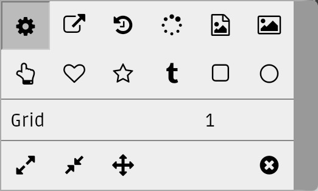

Drawing Canvas
Image annotation
Image annotation

The insert canvas action ()
starts the drawing tool with a blank canvas. The drawing is embedded directly into the
document.
The annotate image action ()
starts the same drawing tool with an existing image as background that allow you to create
annotations on the image. You has the option to save the result as a new image file or overwrite
the original.
- Exit without save.
- Save and exit.
- Redo.
- Undo.
- Reposition the last drawn item.
- Show contextmenu.
Drawing actions

-
Show canvas actions.
-
Export canvas as an image.
- Edit drawing history
-
Change background color.
- Import an image file.
- Draw content of an image file. Only the URI is persisted. So the next time the drawing tool is opened, it would fetch and draw the current content of the file.
- Embed an image.
- Draw content of an image file and embed the image data. No information about the source is persisted. The next time the drawing tool is opened, it draw the image using the embedded image data.
- Freehand curves
TODO
- This is the most often used action. It trace the finger movement and draws curves.
- Draw open/closed spline curves.
TODO
- Draw open/closed polylines.
TODO
- Draw text, configure .
TODO
- Draw rectangles with optional text label.
TODO
- Draw ellipsis with optional text label.
TODO
-
For each action, there is a sub-menu for the drawing parameters, eg. Grid, Stroke color, Line style, Line width, ... etc. Most of them are self-explained.
Canvas actions 
- Resize canvas.
- Resize canvas to fit content

-
Shift content.
-
Clear canvas.

History actions 

- Edit a text node.

-
Reposition an item.

{kind=link}
{kind=link}
{kind=link}
{kind=link}
{kind=link}
In general:
-
Single finger drag draws.
-
Two finger drag scrolls.
However, each action has a few tricks:
-
For polycurves and polylines, single finger drag starts a rubber band. A pause define a mid point and draw a curve segment. -
For text box and shapes, single finger drag draw the shape. Then it starts the positioning mode, where single finger drag moves the shape and two finger pinch/zoom resize the shape. A click ends the positioning mode and start the text entering mode. Another click ends the text entering mode and back to the drawing mode again. -
For export and import actions, single finger drag defines the area for the action. Then it starts the positioning mode, where single finger drag moves the region and two finger pinch/zoom resize the region. A click ends the positioning mode and popup the export or import dialog.